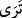

elverişli olduğu konusunda başkalarından daha tam ve kâmil olmasından dolayıdır.
Buna göre baba çocuğun hacet ve maslahatlar için koşma çağı gelmeden onu
koşturamaz. Zaten baba kendisiyle beraber yürüyüp gezmesi için böyle bir evlat
istemiştir. İsmail (a.s.) o zaman 13 yaşındaydı.
İbrahim (a.s.): “Yavrucuğum! Rüyada seni boğazladığımı” yani Allah için seni
kurban ettiğimi, bizzat şekli yahut tâbir ve yorumu böyle olan bir rüya “görüyorum;...”
Denilir ki, İbrahim (a.s.) Zilhicce’nin sekizinci gecesi olan “terviye gecesi”nde
birinin “Allah sana bu oğlun İsmail’i kurban etmeni emrediyor” dediğini gördü. O gün
sabahtan akşama kadar bu rüyanın rahmânî mi? şeytânî mi olduğu konusunda hep şüphe
etti, durdu. Bundan dolayı Zilhiccenin sekizinci gününe “Terviye günü” denildi. İkinci
gece aynı rüyayı tekrar gördü ve bunun rahmânî olduğunu anladı. Bundan dolayı da
Zilhicce’nin dokuzuncu gününe “bildi, anladı” mânâsında “Arefe günü” denildi. Sonra
üçüncü gece yine aynı rüyayı gördü ve artık oğlunu kurban etmek istedi. Böylece
Zilhicce’nin onuncu gününe “Kurban günü” denildi.
“... Bir düşün,” sana arz ettiğim bu hususa sen “ne dersin? dedi.”
Yani seni bizzat kurban ederken görüyorum. Yahut tâbir ve yorumu seni kurban etmem
gerektiği mahiyetinde bir rüya görüyorum, demektir. Bu iş hakkında senin görüşün nedir,
ne hüküm verirsin? İbrahim (a.s.) oğluna bu konuda ne düşündüğünü, görüşünün ne
olduğunu, bu kurban edilme olayını onaylayıp onaylamadığını soruyor. Burada “ fiili
Nahiv’de “ef’âl-i kulûb” diye bilinen kalbî fiillerdendir. Akla gelen, kalbe doğan görüş
mânâsındadır. Yoksa kafa gözünün görmesi değildir. Görülen rüyaya, rüyanın yorumuna
ve peygamberlerin rüyalarının vahiy olması hasebiyle bu emir ve hüküm artık kesindir.
Ancak İbrahim (a.s.) şayet feryat ve figan ederse, ayağı kaymasın diye başa gelen bu
bela ve imtihana karşı kendi durumunu oğluna bildirmek için onunla istişare etmiştir.
Tabi ki feryat ederse ayağı kayar. Teslim olursa emin olur. Daha bela ve musibet
gelmeden boyun eğerse bu durumda ödüllendirilecektir. Bir de böyle bir meşveret,
müşavere ve şûra İbrahimî bir sünnettir. Denilir ki Âdem (a.s.) cennette yasak ağacın
meyvesinden yeme konusunda meleklerle istişare etseydi bu hataya düşmezdi.
“O da cevaben: Babacığım! Emrolunduğun şeyi yap.” dedi. Bu ifadenin bir mânâsı
da “işini yap” demektir. “ diye mazi değil de
“ şeklinde muzari kalıbıyla gelmesi, emrin onunla ilgili ve ona yönelik
şeklinde muzari kalıbıyla gelmesi, emrin onunla ilgili ve ona yönelik
olduğuna, yerine getirilmesi sırasında da emrin devam ettiğine delâlet etmek içindir.
Belki de İsmail (a.s.), İbrahim (a.s.)’ın sözünden oğlunu rüyada kesmeye memur
olduğunu görmüş olabileceğini anlamış ve bundan dolayı “Emrolunduğun şeyi yap”
demiştir. Yine İsmail (a.s.) peygamberlerin rüyalarının hak olduğunu, onların böyle bir
işe ancak Allah tarafından kendilerine verilen bir emirle teşebbüs edebileceklerini
bilmektedir. Çoğunlukla vahiy peygamberlere uyanıkken geldiği halde böyle önemli bir
emrin uyanıkken değil de rüyada gelmiş olması ve rüyada bile olsa baba ve oğlun bu
emri derhal yerine getirme istekleri onların son derece muti ve muhlis olduklarını